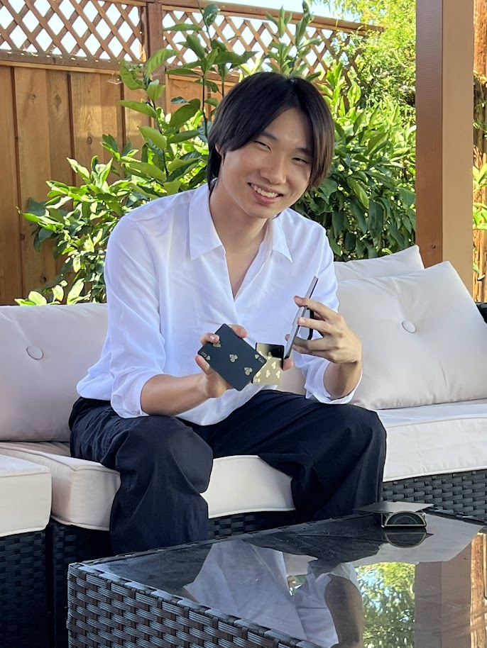

I hope you enjoyed my p5 sketches! Many of them were informed by my my work as a narrative designer for video games.
You can check my games out here on my itch.io page!
In my free time, I love playing games of all kinds! My favorite games are Citizen Sleeper, Outer Wilds, Wingspan, and volleyball.